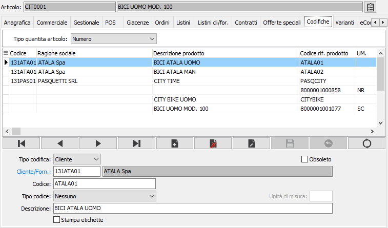

Codifiche
La sezione consente di visualizzare e mantenere le “descrizioni speciali” dei prodotti. È infatti possibile memorizzare i codici articolo, le descrizioni dei prodotti e gli eventuali codici a barre utilizzati dai clienti e dai fornitori e corrispondenti ai prodotti dell’utente, allo scopo di effettuare stampe dei documenti che contengano anzichè codici e descrizioni dell’utente, codici e descrizioni dei clienti o dei fornitori.

TIPO QUANTITÀ ARTICOLO: definisce se l'eventuale codice a barre dell'articolo contiene solo il codice, oppure una quantità o un prezzo. Valori possibili: numero, prezzo, quantità.
TIPO CODICE: specifica se la descrizione è relativa ad un cliente, un fornitore oppure è interna.
CODICE CLIENTE/FORNITORE: codice alfanumerico di 8 caratteri, presente in anagrafica clienti o in anagrafica fornitori, che identifica il soggetto a cui si riferiscono i codici e le descrizioni di cui ai campi precedenti. Sul campo sono attive le funzioni di ricerca e manutenzione della tabella stessa.
CODICE DI PRODOTTO: inserire il codice dell'articolo utilizzato dal cliente o dal fornitore e corrispondente all’articolo attivo.
TIPO CODICE: indica il tipo di codice utilizzato per individuare l’articolo attivo, valori possibili: nessuno, EAN 13, EAN 8, interlived 2/5, UPCA, CODE 39, produttore oppure interno.
unità di misura: il campo è presente se attivo in configurazione Gestione POS il campo "Gestione barcode per unità di misura"; il campo è attivo per tutti i tipi di codice esclusi "Interni" e "Nessuno"; è possibile specificare una unità di misura, tra quelle previste per il prodotto, che sarà utilizzata quando il barcode viene inserito sui documenti/movimenti per riportata l'unità di misura sulle righe. L'unità di misura collegata al barcode non influisce sulle procedure di Inventario fisico e Buoni di prelievo della produzione.
DESCRIZIONE: descrizione utilizzata dal cliente/fornitore in corrispondenza dell’articolo attivo. In caricamento, viene automaticamente proposta la descrizione interna dell'articolo. È possibile cancellarla per memorizzare la descrizione dell'articolo utilizzata dal cliente o fornitore.
STAMPA ETICHETTE: attivo solo se utilizzato il codice a barre indica se effettuare la stampa delle etichette (casella con segno di spunta).